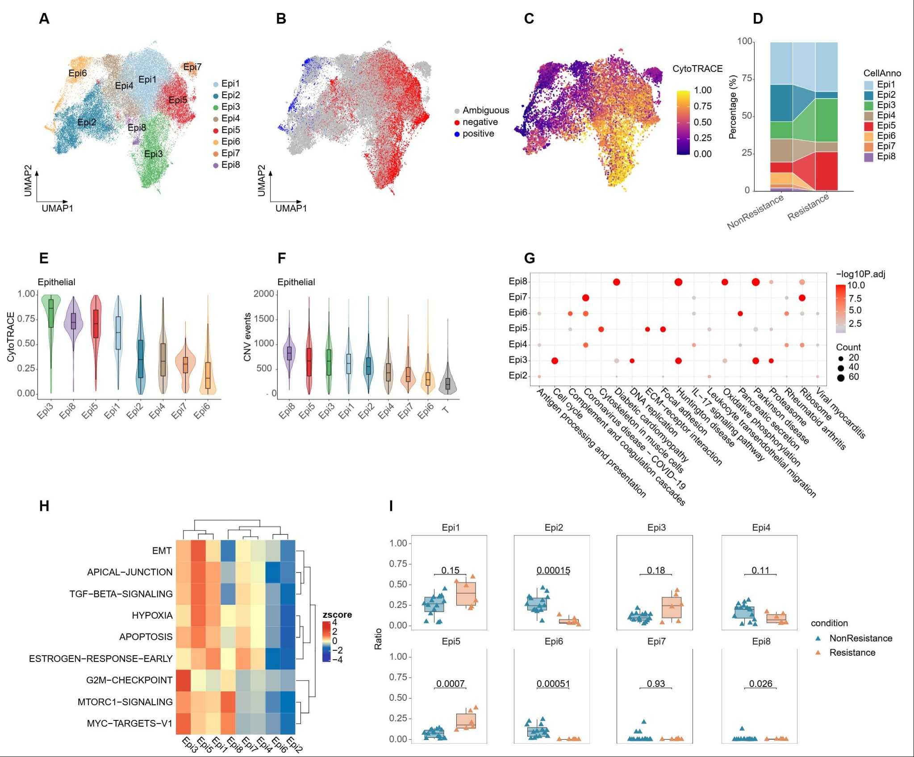
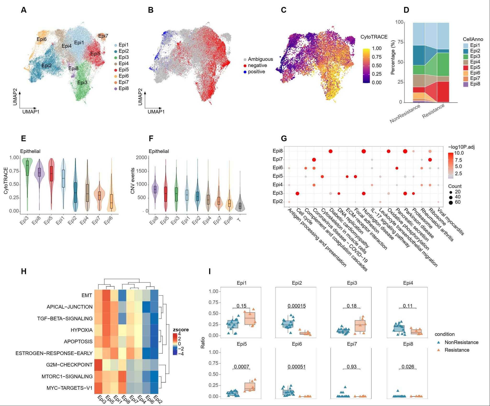

Personal Statement
1. Research Experience (During Master's Studies)
1.1 Immune Repertoire Sequencing (IR-Seq)
During my master's program in Medical Immunology at Xiamen University, I was responsible for all bioinformatics data analyses within the research group. Given that my supervisor was a pathologist with clinical expertise and all team members were engaged exclusively in wet-lab research, I operated in an environment that necessitated comprehensive self-directed learning of computational techniques. Despite limited peer support in bioinformatics, I demonstrated exceptional autonomy and rapid skill acquisition, successfully establishing robust analytical pipelines. My proficiency in independent learning and cross-disciplinary collaboration with the Health Big Data program enabled me to develop innovative solutions to complex analytical challenges.
Within my first semester, I mastered immune repertoire sequencing analysis, including bulk TCR-seq and single-cell TCR-seq, utilizing R, MiXCR, VDJtools, VDJmatch, GLIPH, VDJdb, and BLAST. I subsequently analyzed immune repertoire data from over 300 COVID-19 patients, establishing this as my core technical expertise.
Zhang W, Zhang Q, Zhu C, Shi Z, Shao C, Chen Y, Wang N, Jiang Y, Liang Q, Wang K. The intrarenal landscape of T cell receptor repertoire in clear cell renal cell cancer. J Transl Med. 2022 Dec 3;20(1):558. doi: 10.1186/s12967-022-03771-3.
Chen Y, Fu Q, Ma Y, Wang N, Yang J, Liang Q, Wang K, Gao L. Identification of the immune repertoire of γδ T-cell receptors in psoriasis. Immunol Cell Biol. 2024 Aug;102(7):570-577. doi: 10.1111/imcb.12765.
1.2 Machine Learning Applications
In 2022, I initiated a project investigating the immune repertoire dynamics of COVID-19 patients. This study demonstrated that TCR repertoire sequencing can characterize disease-stage-specific signatures and that SARS-CoV-2-associated TCR patterns serve as robust biomarkers for classification models. My classifier achieved exceptional performance, with an AUC of 0.957 in distinguishing transitional-phase patients from healthy controls (95.7% accuracy) and >95% accuracy in differentiating acute/convalescent patients from healthy individuals. However, classification between acute and transitional phases yielded an AUC of 0.562, reflecting immunological similarity between these stages.
To optimize model performance, I systematically evaluated multiple machine learning algorithms, including Random Forest, Support Vector Machine (SVM), and XGBoost. I implemented SHAP (SHapley Additive exPlanations) analysis to quantify feature contributions and weight relative importance. This research was conducted entirely through self-directed study, demonstrating my capacity for independent scientific investigation.
Zhang Q1+, Liang Q1+, Zhang R2+, Wang N1+, Xiao X, Shao J, Wang K. Identification of SARS-CoV-2-specific T cell and its receptor. J Hematol Oncol. 2024 Mar 27;17(1):15. doi: 10.1186/s13045-024-01537-6. (Published, IF:40.4)
1.3 Tumor neoantigen prediction based on WES and scRNA-seq
From 2023 onward, I developed expertise in tumor neoantigen prediction using whole-exome sequencing (WES) and single-cell RNA-seq data from hepatocellular carcinoma patients. I established comprehensive analytical pipelines for variant calling, HLA typing, and neoepitope prioritization, characterizing somatic mutations at the genetic level and generating high-confidence neoantigen predictions to facilitate personalized immunotherapy strategies.
My technical proficiency encompasses: Trimmomatic, HISAT2, BWA, SAMtools, GATK, Mutect2, Strelka, ANNOVAR, arcasHLA, OptiType, razers3, Cell Ranger, and Seurat.
Wang R, Liang Q, Zhang Q, Zhao S, Lin Y, Liu B, Ma Y, Mai X, Fu Q, Bao X, Wang N, Chen B, Yan P, Zhu Y, Wang K. Ccl2-Induced Regulatory T Cells Balance Inflammation Through Macrophage Polarization During Liver Reconstitution. Adv Sci (Weinh). 2024. doi: 10.1002/advs.202403849. (Published, IF=15.6)
Finally, I received my master's (advisor: Dr. Kejia Wang) and bachelor's degree in Medical Immunology in 2024 from Xiamen University in China. My master's thesis, titled "Bioinformatics Analysis of COVID-19-Associated Immune Repertoire and Specific TCR"
2. Professional Experience (Post-Graduation)
2.1 National Cancer Center (NCC), Chinese Academy of Medical Sciences
Following graduation, I joined the National Cancer Center of China, the nation's premier comprehensive cancer institution with international collaborations including IARC, NIH, and NCI. My responsibilities encompassed:
- Contributing to national clinical specialty construction and major science and technology initiatives, including project application, budgeting, and management
- Conducting neoantigen prediction research for lung cancer
- Performing spatial transcriptome analysis of liver cancer
- Participating in high-level academic conferences (e.g., CCHIO, Tumor Gene Diagnosis Conference)
Ongoing publication:
Yi Yi, Bo-lun Zhang, Nan Wang, Shun Wang, et al. Molecular and Clinicopathological Characteristics Profiling of Macrotrabecular Massive HCC Subtype Reveals Key Features Related to Early Recurrence, CCR-25-1008. Clinical Cancer Research. 2025 (Under Review, IF=10.2)
2.2 Beijing Medical Research Company
To further advance my bioinformatics expertise, I joined a translational research company in Beijing, spearheading single-cell and spatial transcriptomics analyses across multiple cancer types (mesothelioma, breast, pancreatic, colorectal, and renal cancers). My contributions included:
- Comprehensive cellular annotation, comparative analysis between patient cohorts, and functional characterization of tumor microenvironment components
- Investigation of Cancer-Associated Fibroblast (CAF) subpopulations, macrophage polarization states (M1/M2/phagocytic/angiogenic), T-cell functional states (cytotoxic/regulatory/exhausted), and epithelial cell malignancy/stemness trajectories
- Advanced analytical implementations: pseudo-time analysis, transcription factor networks, cell-cell communication, and ligand-receptor interactions
 



Methodological innovations included batch effect correction for merged scRNA-seq datasets, Scissor algorithm mapping of TCGA data to single-cell profiles, and integration with spatial transcriptomics for in situ validation of cellular interactions. These analyses revealed critical insights into therapeutic resistance mechanisms and identified prognostic biomarkers.
3. Technical Proficiencies
- (1) Theoretical Knowledge: Advanced understanding of medical immunology and bioinformatics principles
- (2) Project Management: Experience in independent design and execution of scientific research projects
- (3) Experimental Skills: Immune repertoire sequencing (IR-Seq, bulk/scTCR-seq), WES, scRNA-seq, and spatial transcriptomics
- (4) Computational Tools: R (advanced), GLIPH, VDJmatch, Cell Ranger, Seurat, Trimmomatic, HISAT2, BWA, SAMtools, GATK, Mutect2, Strelka, ANNOVAR, arcasHLA, OptiType, razers3
- (5) Scientific Communication: Demonstrated track record of peer-reviewed publications and conference presentations
- (6) Clinical Integration: Active engagement in clinical pathology operations to bridge computational and medical perspectives
Wang Nan
2025